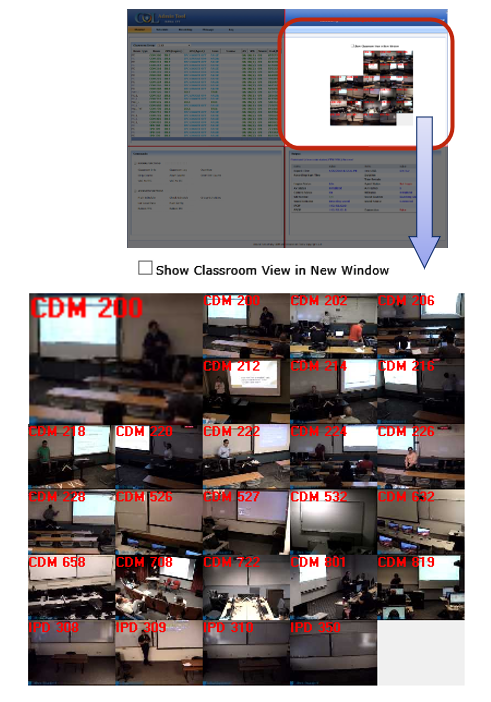

In the top-right quadrant of the Monitor section we see a multimedia component which comprises of thumbnails containing the live video and audio streams from each classroom in the currently selected classroom group. Each thumbnail is labeled with its room number.
When the mouse pointer is hovered over a classroom thumbnail, we see an expanded view of that classroom on the top left corner of the component and we hear a 5-second clip of the live audio from that classroom as well. Hover mouse cursor over classroom thumbnail in every 5 min to hear audio from that classroom.
